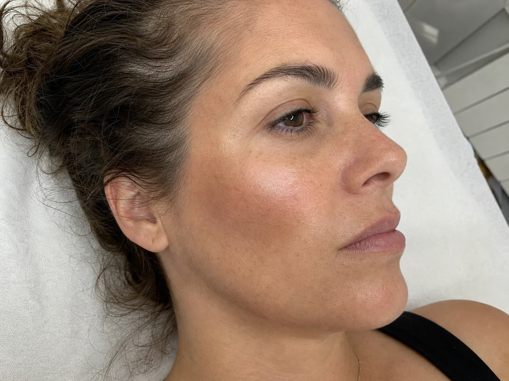

Face Sculpt · Granollers
Facial Contouring
Micropigmentación estratégica que utiliza matices de luz y sombra para aportar dimensión, definición y equilibrio visual al rostro sin crear líneas de maquillaje visibles.
Consultar valoración facial
Tratamiento personalizado
Definición que no parece maquillaje.
La valoración determina dónde aportar profundidad o luminosidad y con qué intensidad. La prioridad es que el efecto acompañe tus rasgos y no se convierta en una máscara.
Qué es y cómo trabajamos
Facial Contouring en Granollers: luz y sombra con micropigmentación
El Facial Contouring es una micropigmentación facial que imita el efecto de un contorno de maquillaje muy ligero: un tono algo más profundo donde el rostro necesita sombra y transiciones suaves para que no haya líneas. No cambia la estructura de la cara ni sustituye un tratamiento de volumen; aporta definición visual.
Qué incluye
Precio: a valoración. Depende de la zona, la intensidad y lo que necesite tu piel; te damos el presupuesto cerrado antes de reservar.
¿Para quién es el Facial Contouring?
Puede encajar si quieres más definición en pómulos u óvalo sin maquillarte cada día, tienes la piel sana en la zona y buscas un resultado sutil.
No lo hacemos, o lo aplazamos, si hay:
- Embarazo o lactancia.
- Heridas, irritación, acné activo, herpes u otras lesiones en la zona.
- Tendencia a cicatrices queloides.
- Tratamientos con isotretinoína, anticoagulantes o quimioterapia, o una enfermedad sin control médico: primero consulta con tu médico.
- Rellenos, peelings o láser recientes en la zona: lo revisamos en la valoración.
Curación y cuidados
Los primeros días el color se ve más intenso y luego se suaviza. Durante la curación conviene no tocar ni rascar la zona, evitar maquillaje sobre ella, sol directo, sauna y piscina, y seguir las indicaciones que te damos por escrito. Es un pigmento semipermanente: se aclara poco a poco y la duración depende de tu piel, la exposición al sol y tu rutina. Por eso valoramos contigo si y cuándo conviene un retoque.
Si lo que buscas es color y frescura en las mejillas, mira la micropigmentación Blush. Para la zona de la ojera, el camuflaje de ojeras.
Preguntas frecuentes sobre Facial Contouring
¿Qué es el Facial Contouring?
Es una micropigmentación facial que usa tonos de luz y sombra muy suaves para dar dimensión al rostro, por ejemplo marcar el pómulo o equilibrar el óvalo, sin líneas de maquillaje visibles.
¿Cuánto cuesta el Facial Contouring en Granollers?
El precio es a valoración, porque depende de las zonas y la intensidad. La valoración es gratuita y te damos el presupuesto antes de reservar.
¿Se nota que es maquillaje?
No debería. Trabajamos gradaciones suaves y elegimos el tono según tu piel para que el efecto acompañe tus rasgos.
¿Incluye prueba de alergia?
Sí. Antes de trabajar con pigmento hacemos prueba de alergia y te enseñamos el diseño previo.
¿Dónde se realiza?
Lo realizamos con cita previa en Nohuska Beauty Lab, Avinguda Sant Esteve, 40, Granollers. Tina y Valentina hacen la valoración.
Una consulta por WhatsApp no confirma una reserva. Acordaremos contigo el tratamiento, la fecha y la hora.
Tu rostro marca el diseño.
Reserva una valoración facial personalizada gratuita.
Consultar por WhatsApp